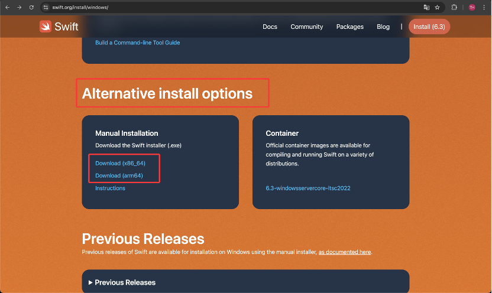
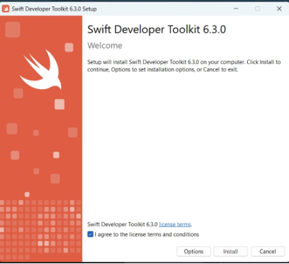
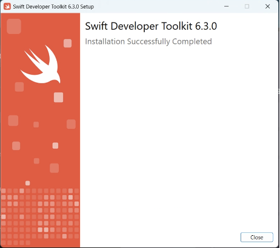
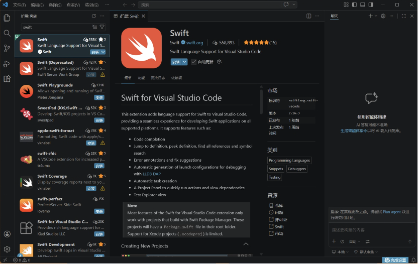
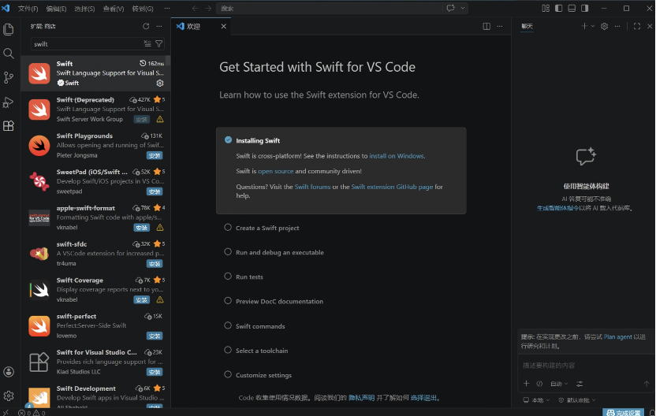
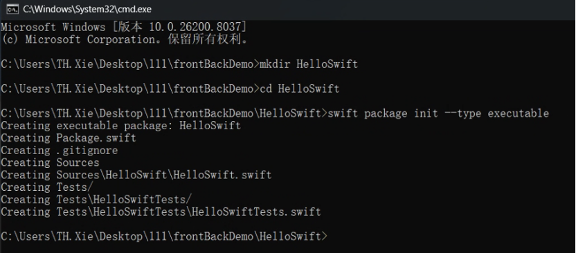
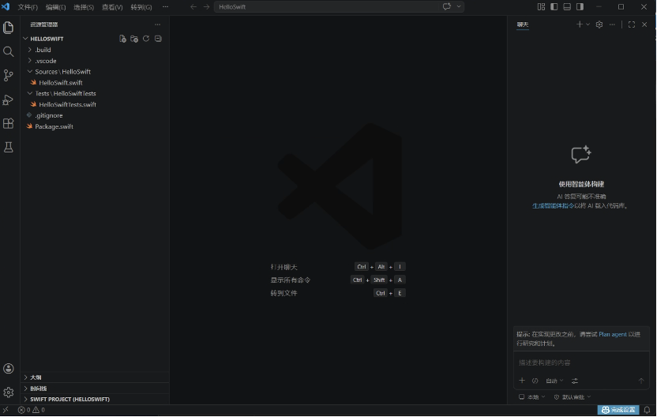

本文档建立在至少掌握一门编程语言的基础之上，为入门 Swift 语言的指导。文中包含核心概念与真实的代码实操，按文档顺序进行以获得最佳效果。
模块一：概念介绍
苹果应用使用什么开发？
在苹果生态（iOS, macOS, watchOS 等）中，Swift 是目前绝对的主流语言。它通常配合 Xcode（苹果官方的集成开发环境 IDE）在 Mac 电脑（macOS 系统）上进行开发。
编译器：与 C/C++ 常用的 GCC 或 Clang 不同，Swift 使用苹果专门开发的
swiftc编译器。不过在底层，它和现代 C++ 一样，都是基于 LLVM 编译器基础架构。这意味着 Swift 代码会被编译成极其高效的机器码，运行速度不仅远超 Python，甚至能与 C++ 媲美。Objective-C：在 Swift 诞生前，苹果的主力语言是 Objective-C (Obj-C)。Obj-C 是 C 语言的严格超集，就是在C语言的基础上扩展功能得到的一门语言。可以理解为借用
Smalltalk面向对象消息传递外衣的 C 语言。其中的Smalltalk是最早提出“万物皆对象”的语言，它强调程序运行时通过向对象发送消息来完成操作。也就是说，C语言更多的是调用函数，而Obj-C更是多的是“让对象去做一件事情”。任何合法的 C 代码都是合法的 Obj-C 代码。
为了理解不同语言的核心思想，我们以“将字符串转化为小写”为例进行对比：
1. 面向过程的 C
char str[] = "Hello World";
for (int i = 0; str[i] != '\0'; i++) {
str[i] = tolower(str[i]);
}
printf("%s\n", str);
这是非常明显的函数式/面向过程编程，我们调用系统函数去操作字符串数据。
2. 面向对象的 C++
class MyString {
private:
char str[100];
public:
MyString(const char* s) {
int i = 0;
while (s[i] != '\0') {
str[i] = s[i];
i++;
}
str[i] = '\0';
}
void toLowerCase() {
for (int i = 0; str[i] != '\0'; i++) {
if (str[i] >= 'A' && str[i] <= 'Z') {
str[i] = str[i] + 32;
}
}
}
void print() {
cout << str << endl;
}
};
int main() {
MyString s("Hello World");
s.toLowerCase();
s.print();
}
这是典型的现代面向对象思想：对象提供成员函数供程序员调用。如果调用的函数不存在，C++ 编译器会直接报错。
3. 消息传递的 Objective-C
NSString *str = @"Hello World";
NSString *lowerStr = [str lowercaseString];
NSLog(@"%@", lowerStr);
NSString *str = @"Hello World"创建一个str字符串对象NSString *lowerStr = [str lowercaseString]向对象str发送消息，请求它执行lowercaseString方法，并返回给lowerStr对象。NSLog(@"%@", lowerStr)调用系统日志函数，输出字符串对象。
我们可以看到，Obj-C支持传统C语言的函数调用，也支持面向对象。但这里的面向对象与C++的面向对象是不同的。
C++的面向对象是对象调用自己的成员函数，调用的函数在编译时就会决定，若调用的函数不存在，编译器会直接报错。
而Obj-C是向对象发送消息，请求对象响应消息，例如例子中的
[str lowercaseString]，并不是调用函数，而是向str对象发送一个名为lowercaseString的消息，若对象中不存在lowercaseString方法，编译依然能通过，只有在运行时（未动态增加方法下）崩溃，提示unrecognized selector sent to instance，即这个对象无法响应这个方法。
4. 现代化的 Swift
Obj-C 虽然强大，但语法繁琐且存在内存泄漏风险。于是苹果开发了 Swift。它精简了语法，大大提高了安全性：
let str = "Hello World"
let lowerStr = str.lowercased()
print(lowerStr)
可以看到，Swift 的调用方式更接近现代 C++ 和 Java（编译时决定方法调用），但它依旧兼容现代动态特性。
总的来说：
- C：程序员操作数据。
- C++：对象提供功能给程序员调用。
- Objective-C：程序员发送信息，请求对象执行任务。
- Swift：兼顾极高运行效率与现代开发体验的安全语言。
Windows 平台如何开发 Swift？
- 不完全开发：可以在 Windows 上安装 Swift 工具链，并使用 VS Code 进行开发。可以编写逻辑代码、算法，甚至用 Swift 写后端服务器。
- 无法做界面：苹果的 UI 框架（如 UIKit、SwiftUI）并未提供 Windows 版本。因此在 Windows 上无法编译出能在 iPhone 上运行的 App。真机调试必须依赖 Mac 环境（或云端 Mac 虚拟机）。在本文我们使用在Windows上开发swift，后续给出使用虚拟机的方法完整开发。
模块二：在 VS Code 中配置 Swift 环境
Step 1: 下载并安装 Swift 工具链
访问 Swift 官方下载页。由于网络问题，建议下拉找到 Alternative install options，选择匹配你电脑架构的安装包（文件约 1.6G，请预留空间）。

下载完成后双击运行，一直点击 Next 完成安装：

出现以下界面则安装成功：

安装完成后，打开 Windows 的 cmd 控制台，输入：
swift --version
若正确输出版本号，则说明底层工具链安装成功！
此时可以删除刚刚下载文件夹中的安装包以节省硬盘空间。
Step 2: 配置 VS Code 插件
打开 VS Code，在扩展商店中搜索 Swift 并下载带有官方认证标志的插件。该插件由苹果和 Swift 社区维护，提供代码高亮、自动补全和调试功能。

安装完成后，VS Code 会出现欢迎界面，至此环境配置全部结束。

模块三：Swift 核心语法
在正式进入 Windows 平台的项目编写前，我们需要先掌握 Swift 的核心语法。Swift 是一门现代且高度强调安全性和表现力的语言。
以下是必备的基础语法。
1. 变量与常量
在 C++ 中，我们习惯先写类型再写变量名（如 int count = 0;）。而在 Swift 中，我们更倾向于和Go语言一样让编译器进行类型推导，并且极其鼓励使用常量来保证数据的安全性。
并且Swift与Go一样，不需要行尾的分号。
let（常量）：一旦赋值，内存中的值就不可更改（相当于 C++ 的 const）。var（变量）：可以被多次修改。
let maxConnections = 100 // 编译器自动推导为 Int (常量)
var currentUsers = 0 // 编译器自动推导为 Int (变量)
currentUsers = 5 // 合法
// maxConnections = 200 // 编译报错！let 声明的常量绝对不许修改
这里我们介绍Swift的基本数据类型：
Swift 的基础数据类型首字母全部大写，因为在底层它们其实也是结构体（Struct）。
Int：整数（在 64 位系统上等同于 64 位整型，替代了 C 中的 long long）。Double / Float：浮点数（默认推荐使用精度更高的 Double）。String：字符串（原生完美支持 Unicode）。Bool：布尔值（只有 true 和 false，不支持 C 语言中“非0即真”的危险设定）。
2. 可选类型 (Optionals)
在 C/C++ 中，空指针导致段错误是头号杀手。在 Swift 中，普通的变量绝对不允许为空（nil）。
如果你希望一个变量可以没有值，必须显式地把它声明为可选类型（在类型后加 ? ）。
var normalName: String = "Alice"
// normalName = nil // 绝对禁止！编译直接报错
var optionalName: String? = "Bob"
optionalName = nil // 合法的操作，因为optionalName是可选类型
如何安全地使用可选类型？
我们使用解包(Unwrapping)的方法，不能直接拿可选类型参与运算，必须先检查是否为空。
方式一：if let（条件解包）
var serverResponse: String? = "Success 200"
if let data = serverResponse {
// 只有 serverResponse 不为 nil，才会进到这里
print("收到服务器数据：\(data)") // data 此时是绝对安全的 String
} else {
print("没有数据")
}
方式二：guard let（提前退出 / 推荐做法）
func processMessage(msg: String?) {
guard let safeMsg = msg else {
print("消息为空")
return // 必须 return 退出！
}
// 执行到这里，说明 msg 绝对不是 nil
print("正在安全地处理：\(safeMsg)")
}
3. 外部与内部参数名
C++ 的函数调用往往是这样的：createUser("Alice", 18, true)，如果不看源码，我们根本不知道这三个参数代表什么。 为了让代码拥有极高的可读性，Swift 为函数参数设计了两套名字：
外部参数名：给调用这个函数的人看的。
内部参数名：函数内部逻辑计算用的。
// 语法：func 函数名(外部参数名 内部参数名: 类型)
func send(message msg: String, toUser user: String) {
print("正在把消息 '\(msg)' 发送给 '\(user)'")
}
// 外部调用时，使用的是 message 和 toUser：
send(message: "Hello", toUser: "Alice")
如果参数意义非常明显，可以用下划线 _ 省略外部参数名：
func multiply(_ a: Double, _ b: Double) -> Double {//使用-> Double标注函数返回值
return a * b
}
let result = multiply(3.0, 4.0) // 不需要写 a: 3.0, b: 4.0
4. 控制流 (if / switch / for)
条件判断 (if / switch)：
if语句
条件表达式两边不需要像C++一样写圆括号 () ，但是执行体的花括号 {} 即使只有一行代码也必须写。这彻底杜绝了 C/C++ 中因为少写大括号导致的悬挂 if 漏洞。
布尔值强制： 条件必须是严格的 Bool 类型，不再支持 C++ 中的 if (1) 或 if (ptr)。
let score = 85
// 没有小括号，必须有大括号
if score >= 90 {
print("优秀")
} else if score >= 60 {
print("及格")
} else {
print("不及格")
}
switch语句
C++ 的 switch 只能判断整型或枚举，且需要 break 来防止case穿透（fallthrough）。
而Swift默认不穿透，也就是不需要写 break，匹配到一个 case 执行完后自动跳出。如果想要穿透，需要显式写 fallthrough 关键字。
必须穷举： 编译器强制要求你的 case 必须涵盖所有可能的值，否则必须加 default 分支。
支持任意类型和区间： 可以匹配字符串、浮点数，甚至是区间范围。
// Switch 默认不贯穿（不需要 break），且支持区间匹配
let speed = 45
switch speed {
case 0:
print("停止")
case 1..<20: // 匹配 1 到 19
print("龟速")
case 20...60: // 匹配 20 到 60
print("正常速度")
default: // 必须穷举，否则用 default 兜底
print("超速")
}
循环 (for-in)：
Swift 在早期的版本里有 C 语言风格的经典 for 循环，但在 Swift 3 之后被彻底废弃了。现在的 Swift 循环极其简洁。
for-in 循环
主要结合区间运算符（... 闭区间，..< 半开区间）来使用。
// 循环 5 次：0, 1, 2, 3, 4
for i in 0..<5 {
print(i)
}
// 如果不需要使用循环变量 i，可以用下划线 _ 代替（类似 Go 的匿名变量）
for _ in 1...3 {
print("Hello")
}
// 步长控制 (等价于 C++ 的 i += 2)
for i in stride(from: 0, to: 10, by: 2) {
print(i)
}
while 与 repeat-while 循环
while 循环和 C++ 一模一样，只是去掉了条件的小括号。
C++ 里的 do-while 循环，在 Swift 里改名叫 repeat-while。
var count = 3
repeat {
print("倒计时 \(count)")
count -= 1
} while count > 0
5. 函数多返回值 (元组)
Swift 利用元组 (Tuple) 原生支持轻量级的多返回值：
// 返回一个包含两个 Int 值的元组，并给它们命名为 min 和 max
func getMinMax(a: Int, b: Int) -> (min: Int, max: Int) {
if a < b {
return (a, b) // 直接返回括号包裹的值
} else {
return (b, a)
}
}
// 调用时非常方便
let bounds = getMinMax(a: 10, b: 20)
print("最小值是：\(bounds.min)")
print("最大值是：\(bounds.max)")
// 也可以像 Go 一样直接解构赋值：
let (myMin, myMax) = getMinMax(a: 5, b: 2)
6. 数组 (Array)
Swift 中的数组 (Array) 实际上对应的就是 C++ 中的动态数组 std::vector，可以随时增删元素，自动扩容。
类型安全： 一个数组只能存放同一种类型的数据。类型写作
[元素类型]。值类型： 这是一个底层核心区别。在 Java 或 Obj-C 中，数组传递的是引用（指针）。但在 Swift 中，数组是值类型（Struct）。当你把数组 A 赋值给数组 B 时，实际上是发生了一次拷贝（不过底层做了优化，性能极高）。
// 1. 初始化一个空的 Int 数组
var numbers: [Int] = []
// 也可以用简写：var numbers = [Int]()
// 2. 初始化并赋予初值（编译器会自动推导出是 [String]）
var names = ["Alice", "Bob"]
// 3. 增删改查
names.append("Charlie") // 相当于 C++ 的 push_back
names.insert("Dave", at: 0) // 在开头插入
names.remove(at: 1) // 删除下标为 1 的元素
let count = names.count // 获取数组长度（不是 .length 也不是 .size()）
let isEmpty = names.isEmpty // 判空
// 4. 遍历数组
for name in names {
print(name)
}
// 5. 如果同时需要索引（下标）和元素值（类似 Go 的 for i, v := range）
for (index, name) in names.enumerated() {
print("第 \(index) 个人是 \(name)")
}
7. 标准输入输出 (Standard I/O)
在算法开发和在线评测中，我们绝大部分时间都需要从控制台读取用户的输入，并将结果打印到屏幕上。
输出我们已经很熟悉了，使用 print() 函数即可。
输入在 Swift 中使用 readLine() 函数。
核心注意点：
readLine() 的返回值是一个可选类型 String?。因为在读取输入时，有可能会遇到文件结尾（EOF）导致读取不到任何内容，所以它有可能为空。我们在使用时，必须结合前面学到的解包知识。
在算法题（如典型的 A+B 问题）中，我们通常需要读取一行用空格隔开的数字，并将它们转换为整数。标准的写法如下：
// 1. 安全地读取一行输入
if let line = readLine() {
// 2. 将字符串按空格分割
let parts = line.split(separator: " ")
// 3. 确保至少有两个部分，并尝试将它们安全转换为 Int
if parts.count >= 2, let a = Int(parts[0]), let b = Int(parts[1]) {
// 4. 计算并输出结果
print(a + b)
} else {
print("输入格式错误或无法转换为整数")
}
}
这段代码展示了 Swift 极其严谨的安全特性：只有在“成功读到输入”、“成功分割出两项”、“成功转化为整数”这三个条件全部满足时，才会执行加法运算，彻底杜绝了非法输入导致程序崩溃的可能。
模块四：编写第一个 Swift 程序
Step 1: 初始化项目
在 cmd 控制台找一个合适的位置，新建项目：
mkdir HelloSwift
cd HelloSwift
swift package init --type executable
若出现以下界面则项目配置成功：

Step 2:
此时目录结构应为：
HelloSwift/ // 项目根目录
├── Sources/ // 编写所有业务逻辑代码的地方
│ └── HelloSwift/ // target（目标模块）文件夹
│ └── HelloSwift.swift // 程序的入口文件
├── Tests/ // 单元测试目录，用于验证算法是否正确
│ └── HelloSwiftTests/
│ └── HelloSwiftTests.swift
├── .gitignore // Git 忽略配置文件
└── Package.swift // 项目的包描述文件（类似 Go 的 go.mod 或
// C++ 的 CMakeLists.txt）
使用 VS Code 打开HelloSwift目录：

打开HelloSwift/Sources/HelloSwift.swift
我们会发现文件已经写好Hello World代码，我们尝试运行：
swift run
若控制台输出Hello world，则运行成功。
Step 3: 编写并运行代码
打开 Sources/HelloSwift/HelloSwift.swift，修改为以下代码：
// 1. @main 是一个属性标记，告诉编译器：“这是整个程序的启动起点”
@main
struct HelloSwift {
// 2. 启动时，系统会自动寻找并执行这个名为 main 的静态函数 (static func)
static func main() {
print("Hello, Swift on Windows!")
// 结合刚刚讲解的语法
// 3. 声明常量和可选类型的变量
let language = "Swift"
var currentVersion: Double? = 6.0
// 4. 使用 if let 进行安全的解包
if let version = currentVersion {
// \(变量名) 是 Swift 的字符串插值语法，比 C++ 的 cout << 或 C 的 %d 方便得多
print("当前使用的语言是 \(language)，版本号：\(version)")
} else {
print("无法获取版本信息。")
}
// 5. 调用一个带有外部参数名的函数
login(username: "Student", withPassword: "123")
}
// 自定义函数演示
static func login(username user: String, withPassword pwd: String) {
print("用户 \(user) 尝试使用密码 \(pwd) 登录...")
}
}
在控制台输入 swift run 尝试运行：
swift run
这个时候会收到 Warning ，这是正常情况，观察是否能正常输出。
Step 4: 编写单元测试
我们目前仍未使用过test相关文件，这里我们给出一个示例：
这里的test类似于python中的函数测试，首先我们要修改主程序，使其函数能返回值。
打开 Sources/HelloSwift/HelloSwift.swift，修改为以下代码：
/@main
struct HelloSwift {
static func main() {
print("Hello, Swift on Windows!")
let finalPrice = calculateDiscount(price: 100.0, discount: 0.2)
print("打折后的价格是：\(finalPrice)")
}
// 我们新增一个带返回值的函数，用于演示单元测试
// 注意：外部参数名和内部参数名都写了
static func calculateDiscount(price p: Double, discount d: Double) -> Double {
return p * (1.0 - d)
}
}
打开 Tests/HelloSwiftTests/HelloSwiftTests.swift，修改为以下代码：
import XCTest // 1. 引入苹果官方的测试框架 XCTest
@testable import HelloSwift // 2. 引入我们自己写的模块。@testable 允许我们访问主模块中的内部函数
// 3. 测试类必须继承自 XCTestCase
final class HelloSwiftTests: XCTestCase {
// 4. 测试函数必须以 "test" 开头，否则编译器不会把它当成测试用例
func testCalculateDiscount() {
// Arrange: 准备测试数据
let originalPrice = 100.0
let discountRate = 0.2 // 打八折
// Act: 执行我们在主程序中写的业务逻辑
let result = HelloSwift.calculateDiscount(price: originalPrice, discount: discountRate)
// Assert: 断言（验证结果是否符合预期）
// 如果 result 不是 80.0，测试就会失败，并打印后面的错误提示
XCTAssertEqual(result, 80.0, "折扣计算错误，预期是 80，实际是 \(result)")
}
// 可以写无数个 test 开头的函数来测试边界情况
func testFreeItem() {
let result = HelloSwift.calculateDiscount(price: 100.0, discount: 1.0)
XCTAssertEqual(result, 0.0, "100% 折扣后价格应该为 0")
}
}
在控制台输入：
swift test
如果你看到 0 failures，这就意味着所测试的函数完美通过了测试。
至此，你已经成功使用 Swift 语言完成了第一个跨平台程序与测试用例，欢迎进入 Apple 生态开发的领域！
模块五：在线评测平台 (Online Judge)
在掌握了本地开发与基础语法后，可以使用我们的在线评测平台（Online Judge，简称 OJ）来巩固 Swift 语法。
平台规则：仅支持标准 I/O
本评测平台为作者手写，不支持读写本地文件
你的程序必须且只能通过标准输入（Standard Input）读取数据，并通过标准输出（Standard Output）打印结果。
- 读取数据：仅能使用
readLine()捕获控制台传入的测试文本。 - 输出数据：仅能使用
print()，且输出的格式（甚至空格和换行）必须与题目要求的“期望输出”完全一致。
常见的评测结果状态码：
点击“提交评测”后，系统会返回以下几种结果之一：
- [AC] Accepted (答案正确)：恭喜！程序通过了所有测试用例。
- [WA] Wrong Answer (答案错误)：程序能正常运行，但某些测试用例算出来的结果与标准答案不符。
- [CE] Compile Error (编译错误)：代码存在语法错误（如少写了逗号或大括号），无法生成可执行文件。
- [TLE] Time Limit Exceeded (运行超时)：算法效率太低，或者陷入了死循环，未能在规定的时间（如 1 秒）内跑完所有数据。
- [RE] Runtime Error (运行错误)：程序在运行中崩溃了（比如数组越界、对
nil进行了强制解包等）。
END